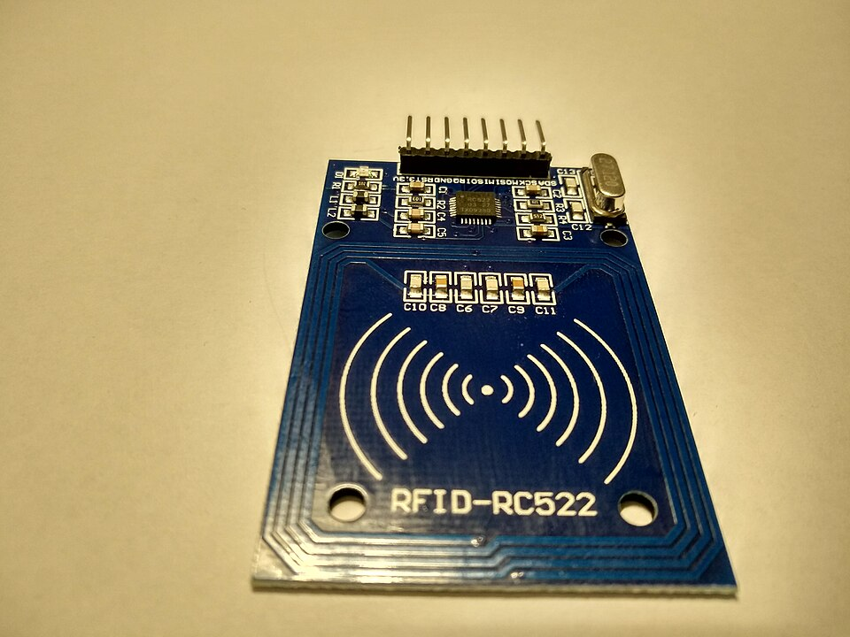
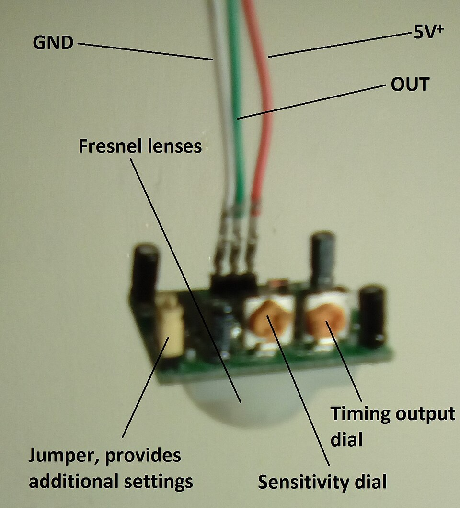
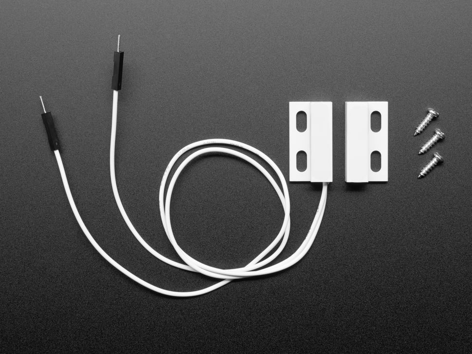
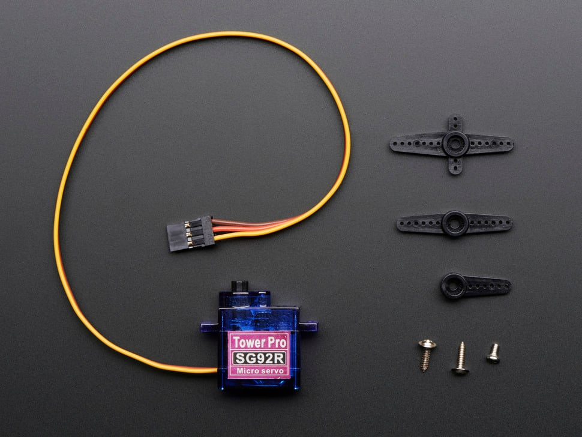
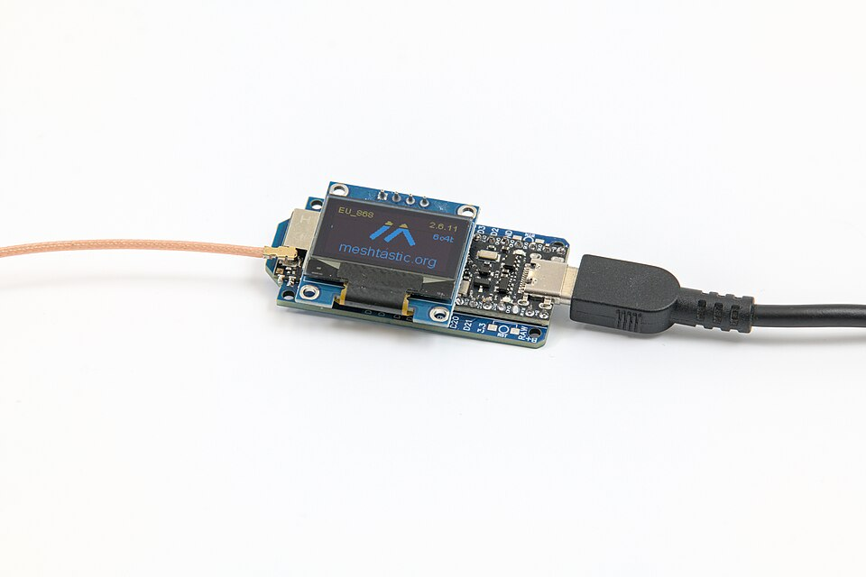
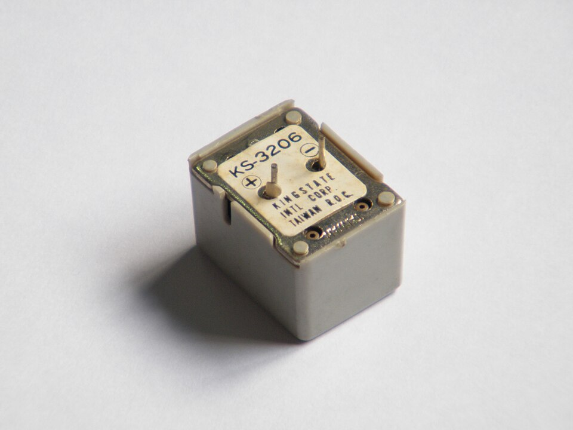
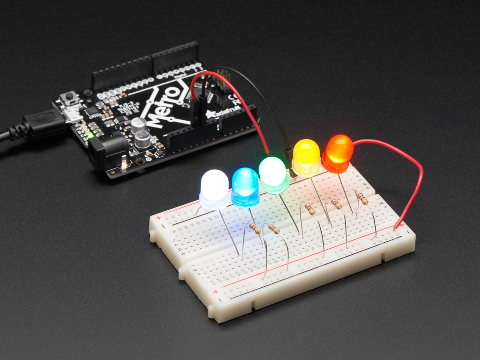
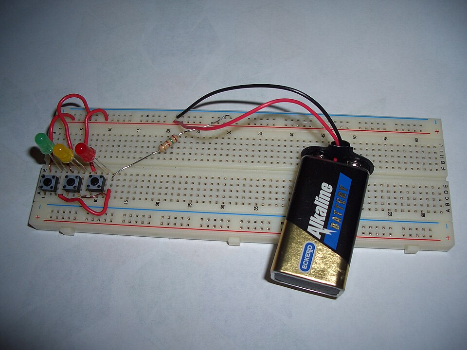

FOTO REAL
FOTO REAL
Controlador Central
ESP32-S3 DevKit
Cómo reconocerlo: Placa alargada verde/negra con un rectángulo metálico plateado en el centro, dos filas de pines a los lados y puerto USB-C en el borde.
- Detalle: La chapa metálica plateada dice "ESP32-S3" o "WROOM".
- Pines: Dos tiras largas con 44 patitas en total.
- Función: Cerebro que evalúa los sensores y controla la cerradura.

FOTO REAL
Control de Acceso
Lector RFID RC522 + Tarjeta y Llavero
Cómo reconocerlo: Placa delgada de color azul brillante con pistas de cobre circulares en espiral (la antena).
- Accesorios: Viene con una tarjeta plástica blanca (tipo Bip) y un llavero azul con agujero.
- Pines: Tira de 8 patitas metálicas en un extremo.
- Frecuencia: 13.56 MHz (lee a 2-4 cm de distancia).

FOTO REAL
Sensor de Presencia
Sensor PIR HC-SR501
Cómo reconocerlo: Es inconfundible: tiene una cúpula semiesférica de plástico blanco (parece una media pelota de golf o un ojo) montada en una placa verde.
- Atrás: Tiene dos potenciómetros (tornillos de ajuste) color naranja o amarillo.
- Pines: 3 patitas (`VCC`, `OUT`, `GND`).
- Función: Detecta calor corporal y movimiento en el interior.

FOTO REAL
Sensor de Puerta
Reed Switch Magnético (MC-38)
Cómo reconocerlo: Son dos piezas idénticas de plástico blanco (o dos bloques alargados). Una pieza tiene 2 cables y la otra es el imán suelto.
- Detalle: Si te pasaron la versión en cápsula de vidrio, es un tubito transparente de 2 cm con 2 laminitas adentro.
- Función: Detecta el momento exacto en que se abre la puerta de la bodega.

FOTO REAL
Actuador / Pestillo
Microservo SG90 (9g)
Cómo reconocerlo: Motorcito diminuto con carcasa de plástico azul translúcido y un cable plano de 3 colores (café, rojo y naranja).
- Accesorios: Viene en una bolsita plástica con bracitos/aspas de plástico blanco y tornillitos pequeños.
- Función: Gira 90° para simular el desbloqueo del pestillo de la puerta.

FOTO REAL
Visualización
Pantalla OLED 0.96" I2C
Cómo reconocerlo: Pantallita de vidrio negro pequeña (aproximadamente 2.5 × 2.5 cm) montada sobre una placa azul con solo 4 pines arriba.
- Pines (4): `GND`, `VCC`, `SCL`, `SDA` (comunicación I2C).
- Pantalla: Resolución de 128 × 64 píxeles (texto nítido celeste/blanco).
- Función: Muestra si el acceso fue autorizado o el tipo de alerta.

FOTO REAL
Alarma Acústica
Buzzer (Zumbador 5V)
Cómo reconocerlo: Cilindro de plástico negro (como una pastilla redonda) con un orificio pequeño en el centro superior y dos patitas metálicas abajo.
- Polaridad: La pata más larga es el positivo `+`.
- Función: Suena intermitente como sirena cuando hay intrusión.

FOTO REAL
Indicadores Ópticos
LEDs 5mm (Verde, Amarillo, Rojo) + Resistencias
Cómo reconocerlos: Focos pequeños transparentes o de color con dos patas metálicas largas. Las resistencias son cilindros beige pequeños con rayitas de color.
- Colores: 1 Verde (Desarmado), 1 Amarillo (Armado), 1 Rojo (Intrusión).
- Resistencias: 3 unidades de 220Ω o 330Ω (franjas rojo-rojo-marrón).

FOTO REAL
Montaje y Conexión
Protoboard + Cables Dupont
Cómo reconocerlos: Placa plástica blanca con cientos de agujeros. Los cables vienen en un manojo multicolor con cabezales negros plásticos cuadrados.
- Tipos de cable: Macho-Hembra (imprescindibles para conectar los sensores) y Macho-Macho.
- Función: Permite conectar todo el circuito de forma ordenada sin soldadura.